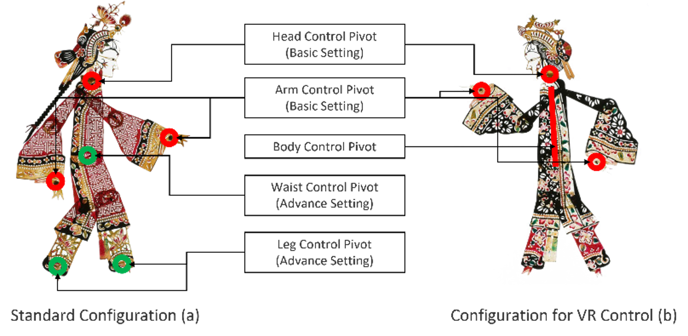
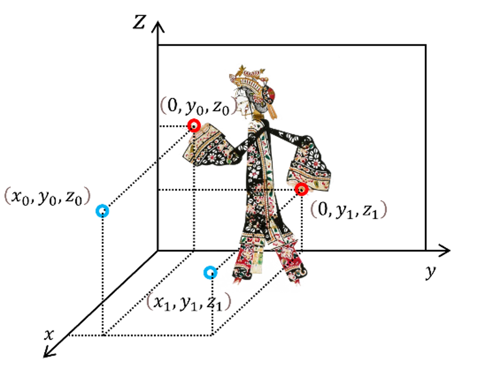

ShadowPlayVR: Understanding Traditional Shadow Puppetry Performance Techniques Through Non-Intuitive Embodied Interactions
通过非直觉的具身交互理解传统皮影戏表演技巧
First release at VRST 2023

Abstract
摘要
"ShadowPlayVR" is a virtual reality system designed to introduce the intricate art of Chinese shadow puppetry into Virtual Reality (VR), focusing on the non-intuitive embodied interactions that emulate puppetry performance. By incorporating an immersive, experiential learning approach, ShadowPlayVR offers users a hands-on understanding of this art form. Preliminary testing reveals the significant role of contextual information in facilitating understanding and mastering these complex interactions. The work also presented showcases how VR can serve as a powerful tool to preserve and engage with traditional cultural heritage in a contemporary digital context.
“ShadowPlayVR”是一个虚拟现实系统，旨在将中国传统皮影戏的精湛艺术引入虚拟现实（VR），专注于模仿皮影戏表演的非直觉具身交互。通过沉浸式、体验式学习方法，ShadowPlayVR为用户提供了一种身临其境的理解这种艺术形式的方式。初步测试揭示了上下文信息在促进这些复杂交互中的重要作用。这项工作还展示了VR如何作为保存和参与传统文化的强大工具，在当代数字环境中发挥作用。
Introduction
引言
Bringing traditional cultural content to life in immersive media is rife with unique challenges. Researchers recreating the artistic style of traditional art in various ways, and many attempts overlook opportunities to authentically embody the original craftsmanship or performance techniques.
在沉浸式媒体中呈现传统文化内容充满了独特的挑战。研究者以各种方式重现传统艺术的艺术风格，而许多尝试忽略了真实体现原始工艺或表演技巧的机会。
This paper presents "ShadowPlayVR", a research project that probes the intriguing overlap of Chinese traditional shadow puppetry and virtual reality (VR). Chinese Shadow puppetry, an intricate performance art, demands a high level of precision and finesse in puppet manipulation. Transposing this art form into a VR setting presents distinct challenges and possibilities. Our goal extends beyond merely emulating the visual aesthetics of shadow puppetry. We aim to simulate traditional puppet control methods as well, designing embodied interactions that echo the intricacy and skill involved in the art of shadow puppet performance. ShadowPlayVR seeks to respect the art form's rich heritage while enabling users to delve deeper by discovering interactions and adapting them for practical use.
本文介绍了"ShadowPlayVR"，这是一个探索中国传统皮影戏与虚拟现实（VR）之间有趣交叉点的研究项目。中国皮影戏作为一种复杂的表演艺术，需要高度精确和精细的木偶操控。将这种艺术形式转换到VR环境中呈现出独特的挑战和可能性。我们的目标不仅仅是模仿皮影戏的视觉美学。我们还旨在模拟传统木偶控制方法，设计能够呼应皮影戏表演艺术中复杂性和技巧的具身交互。ShadowPlayVR尊重这种艺术形式丰富的传统，同时通过发现交互并将其应用于实际使用，使用户能够更深入地探索。
User Experience Design
用户体验设计

Figure 1: Comparison between two control configurations. Red circles highlight critical puppet control joints, while green circles denote auxiliary joints aiding smooth puppet movements.
图1：两种控制配置的比较。红色圆突出显示关键的木偶控制关节。绿色圆表示辅助关节，帮助木偶平稳移动。
There have been numerous attempts to digitize shadow puppetry. While these techniques can successfully recreate the visual style, they often overlook and sacrifice the intricate control and performance details that are inherent in the traditional craft. This study seeks to not only recreate the artistic style of shadow play but also to retain the traditional skills involved in puppet control and performance.
数字化皮影戏的尝试已有很多。虽然这些技术可以成功地重现视觉风格，但它们往往忽视并牺牲了传统工艺中固有的复杂控制和表演细节。本研究不仅寻求重现皮影戏的艺术风格，还致力于保留木偶控制和表演中涉及的传统技巧。
Control in traditional shadow puppetry requires multi-point manipulation and indirect control. Multi-point manipulation refers to the puppeteer's ability to control different puppet joints simultaneously using controlling rods, whereas indirect control signifies that the puppeteer's actions do not map directly onto the puppet due to its sideways orientation. These features present significant challenges when designing a virtual reality environment experience: First, the VR controllers are not conducive to multi-point precise control, restricting the flexibility of puppet operation. Second, one key challenge lies in helping users understand and adapt to the indirect control mechanism of traditional shadow puppetry.
皮影戏的控制需要多点操作和间接控制。多点操作是指操纵者使用控制杆同时控制不同的木偶关节，而间接控制则意味着操纵者的动作不会直接映射到木偶上，因为木偶是侧向放置的。这些特征在设计虚拟现实环境体验时提出了重大挑战：首先，VR控制器不利于多点精确控制，限制了木偶操作的灵活性。其次，一个关键的挑战是帮助用户理解和适应皮影戏的间接控制机制。
To address these issues, the shadow puppets to be controlled by the participants were simplified, focusing on the head, hands, and body as the primary movable joints. (Figure 1) Inspired by the traditional shadow plays puppet control techniques, we formulated four distinct interaction modes. The controls were assigned as follows:
为了解决这些问题，我们简化了参与者控制的木偶，专注于头部、手和身体作为主要可移动关节。（图1）受传统皮影戏木偶控制技术的启发，我们制定了四种不同的交互模式。控制器分配如下：

Figure 2: Logic of Arms Control. Blue circles exemplify the relative position of the two controllers (Left: (𝒙𝟎, 𝒚𝟎,𝒛𝟎); Right: (𝒙𝟏,𝒚𝟏,𝒛𝟏)) , with red circles showing the relative position of the arm joints (Left:(𝟎, 𝒚𝟎,𝒛𝟎); Right: (𝟎,𝒚𝟏,𝒛𝟏)).
图2：手臂控制逻辑。蓝色圆圈表示两个控制器（左：(𝒙𝟎, 𝒚𝟎,𝒛𝟎); 右：(𝒙𝟏,𝒚𝟏,𝒛𝟏)) 的位置，红色圆圈显示手臂关节的位置（左：(𝟎, 𝒚𝟎,𝒛𝟎); 右：(𝟎,𝒚𝟏,𝒛𝟏))。
Testing
测试
The evaluation process consisted of two parts: an exploration session (4 minutes) and a performance task session (2 minutes). Participants first received a brief overview of shadow play techniques. Following the introduction, participants freely interacted with the system during the exploration phase, allowing us to observe their interpretation and adaptation to the unique control mechanics of the VR shadow puppetry. During the task session, participants performed three tasks: waving (basic), stroking the beard (advanced, non-intuitive), and walking back and forth (hard, non-intuitive). The goal was not performance quality but observing how participants utilized different interaction methods. Post-testing, we conducted interviews to understand participants' experiences, focusing on comprehension, comfort, and overall impression of the VR environment.
评估过程由两部分组成：探索环节（4分钟）和表演任务环节（2分钟）。参与者首先接收了关于皮影戏技术的简要概述。在介绍之后，参与者在探索阶段自由地与系统互动，使我们能够观察他们对VR皮影戏独特控制机制的理解和适应。在任务环节中，参与者执行了三个任务：挥手（基础），抚摸胡须（高级，非直观），以及来回走动（困难，非直观）。目标不是表演质量，而是观察参与者如何利用不同的交互方法。测试后，我们进行了访谈以了解参与者的体验，重点关注对VR环境的理解、舒适度和整体印象。
Results
结果
During the exploration session, all but the Body (Flipping) interactions were discovered by the participants within the first two minutes. Out of the twelve participants, eight found all possible interactions. Five of these eight participants attributed their discovery of the puppet flipping mechanism to trial and error, while the remaining three participants cited the preliminary introduction as their source of understanding. In the task session, ten participants completed all tasks and discovered all interactions. Two participants were unable to complete the final task due to the inability to figure out the flipping mechanic. The interviews indicated that the contextual information provided prior was beneficial in understanding the controls. Regarding the arms control mechanism, several participants described it as "easy to figure out but overly complicated." The Body (Flipping) interaction was unanimously seen as the most elusive but became clearer after revisiting the provided information.
在探索环节中，除了身体（翻转）交互外，所有交互都在前两分钟内被参与者发现。在十二名参与者中，有八名发现了所有可能的交互。这八名参与者中，五名将发现木偶翻转机制归功于反复尝试，而其余三名参与者则表示是通过初步介绍理解的。在任务环节中，十名参与者完成了所有任务并发现了所有交互。两名参与者由于无法理解翻转机制而未能完成最后一项任务。访谈表明，事先提供的背景信息有助于理解控制方式。关于手臂控制机制，几位参与者将其描述为"容易理解但过于复杂"。身体（翻转）交互被一致认为是最难发现的，但在重新查看提供的信息后变得更加清晰。
Preliminary results illustrate the viable application of virtual reality in recreating traditional shadow puppetry techniques through non-conventional embodied interactions. The findings emphasize the essential role of contextual information in comprehending non-intuitive interactions. With the aid of such information, virtual reality can serve as an effective tool to foster understanding and perpetuate traditional art performance techniques.
Future work includes refining the ShadowPlayVR system to deliver a more immersive user experience and introducing a multiplayer mode for collaborative performances.
初步结果表明，虚拟现实通过非常规的具身交互在重现传统皮影戏技术方面具有可行的应用。研究发现强调了背景信息在理解非直观交互中的重要作用。借助这些信息，虚拟现实可以作为一种有效工具，促进对传统艺术表演技巧的理解和传承。
未来的工作包括完善ShadowPlayVR系统以提供更具沉浸感的用户体验，并引入多人模式以支持协作表演。
Ref.
- Erin Pangilinan, Steve Lukas, and Vasanth Mohan. 2019. Creating augmented and virtual realities: theory and practice for next-generation spatial computing. " O'Reilly Media, Inc.".
- Yue Shi, Yue Suo, Shang Ma, and Yuanchun Shi. 2011. PuppetAnimator: A performative interface for experiencing shadow play. the Proceedings of ACHI.
- Yan Shi, Fangtian Ying, Xuan Chen, Zhigeng Pan, and Jinhui Yu. 2014. Restoration of traditional Chinese shadow play‐Piying art from tangible interaction. Computer Animation and Virtual Worlds, 25(1), 33-43.
- Mingmin Zhang, Xuan Chen, and Zhigeng Pan. 2014. Interaction study of digital shadow play using the Kinect. In SIGGRAPH Asia 2014 Posters (pp. 1-1)
- Wenli Jiang, and Chong Cao. 2021. Reconstruction: A Motion Driven Interactive Artwork Inspired by Chinese Shadow Puppet. In Proceedings of the 29th ACM International Conference on Multimedia (pp. 1441-1442).